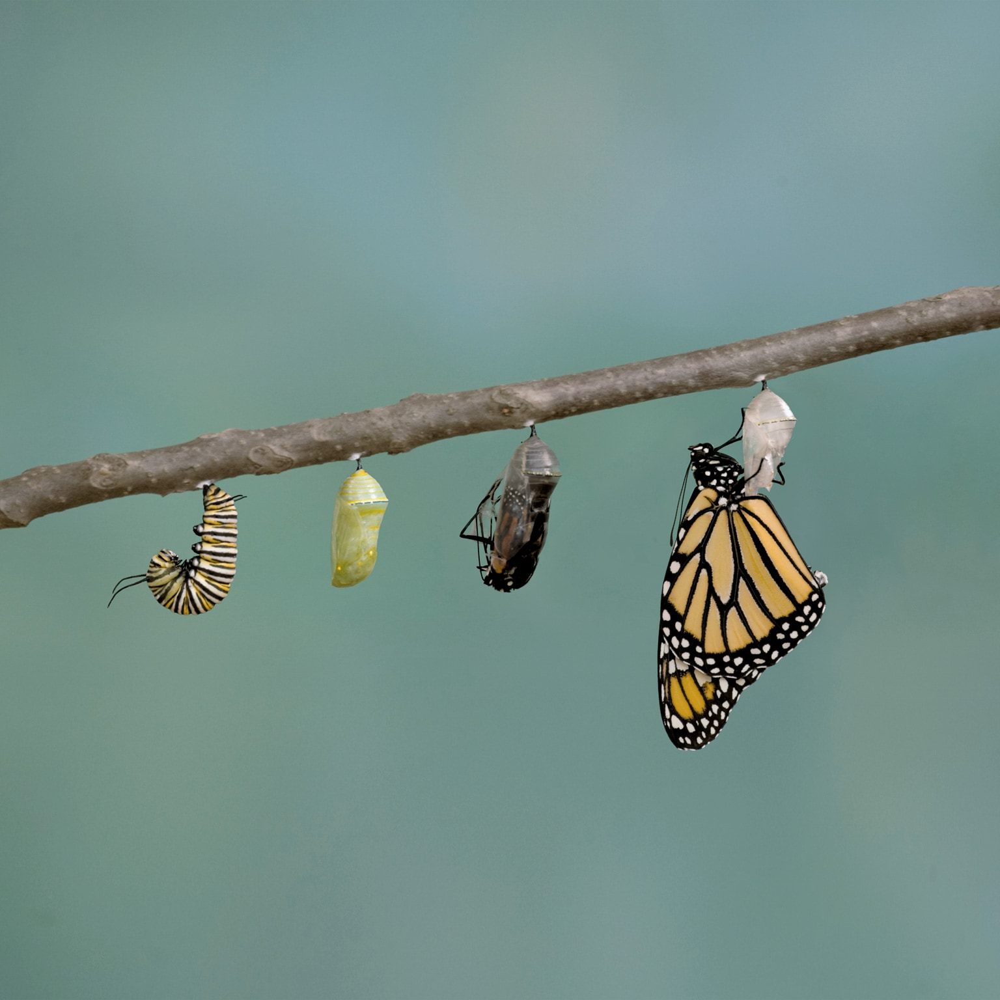
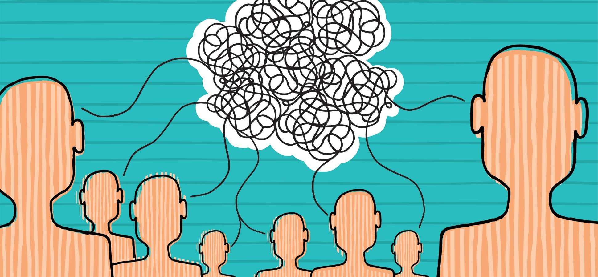

Quick fact: Did you know that when we reach out to help others our brains produce chemicals that improve our own mood and promote resilience?

Lyda Hill Institute for Human Resilience
Potential Project
I would like to create a social/political commentary on workplace conditions and miscommunication within the healthcare system. Working within the different branches (geriatric care, clinical research, emergency medicine) made me realize how disjointed/ineffective collaboration detrimentally impacts patient care and employee life quality. I plan on interviewing people from these different fields. I know at this moment my topic is very broad, but my goal is to pinpoint one specific issue and create a structured plan to solve it.

In the Future
Although I plan on attending medical school, my ultimate goal is to change the system (becoming a doctor and serving in the military would give me a complete/thorough understanding of the entire institution). Whether this is regarding healthcare, the socioeconomic sector, or the global climate crisis, I want to pinpoint issues and formulate/implement logical solutions. Some of my passions include eliminating racist technology from practice, mistreatment of the elderly, and discrimination against the LGBTQ community. I want this project to be a stepping stone to help me figure out:
1. What I am truly passionate about
2. What I want to fix
3. How I can make change/help as many people as possible
Although I plan on attending medical school, my ultimate goal is to change the system (becoming a doctor and serving in the military would give me a complete/thorough understanding of the entire institution). Whether this is regarding healthcare, the socioeconomic sector, or the global climate crisis, I want to pinpoint issues and formulate/implement logical solutions. Some of my passions include eliminating racist technology from practice, mistreatment of the elderly, and discrimination against the LGBTQ community. I want this project to be a stepping stone to help me figure out:
1. What I am truly passionate about
2. What I want to fix
3. How I can make change/help as many people as possible
2. What I want to fix
3. How I can make change/help as many people as possible